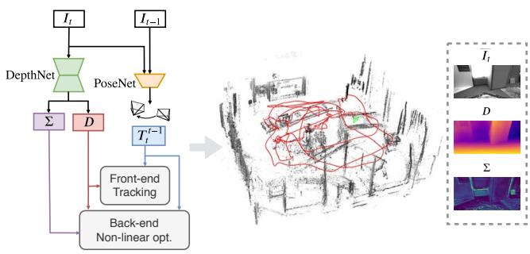
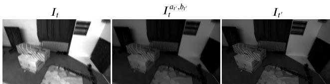
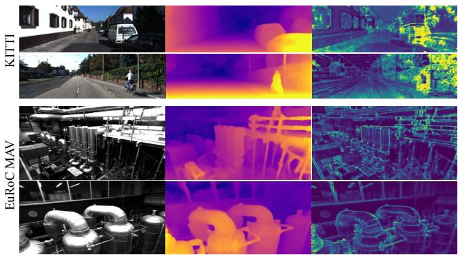
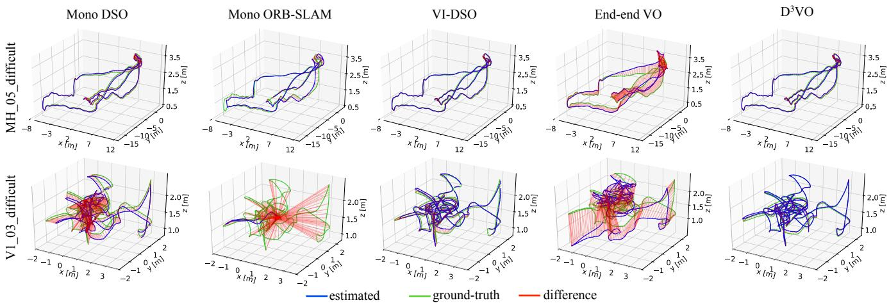

不再当黑箱 VO，而是把深度/位姿/不确定度网络紧嵌进 DSO 直接法——用深度学习补几何方法的尺度漂移 🔧
看懂 D3VO 如何从「用网络替换整条流水线」转向「网络+几何后端融合」：把自监督深度/位姿/不确定度三个网络紧嵌进经典 DSO 直接法的前端跟踪与后端非线性优化。重点吃透不确定度怎么给光度残差加权、自动降权动态/反射区。
0048（第三季 DSO 光度标定与四象限）是本课必须回链的债——D3VO 的亮度仿射变换 $I^{a,b}=aI+b$ 直接沿用 DSO 思路，且把 DSO 的稀疏光度 BA 当后端。0143 DeepSLAM 的不确定度只做「二值掩码」，D3VO 把它升级成「连续权重」做进 BA——思想同源、粒度更细。0054–0056 那代「用深度学习当深度」也在这里收口：D3VO 让深度网络直接服务经典后端。
前面三篇（DeepVO/UnDeepVO/DeepSLAM）的思路都是「端到端黑箱」：一把网络吞掉图像、吐出位姿，几何方法被丢在一边。D3VO 换了个更聪明的姿势：不丢几何方法，而是让网络给它当「辅助零件」。
它选的几何后端是 DSO（Direct Sparse Odometry，第三季 0048 讲的直接法）——一个「不用特征点、直接拿像素亮度做光束法平差」的经典 VO。D3VO 给 DSO 配了三个神经网络：深度网络（给每点 metric 深度初值，治尺度漂移）、位姿网络（替 DSO 的恒定速度模型做前端初始化，并在 BA 里加位姿先验）、不确定度网络（给每个像素算「我有多准」，自动降权坏像素）。术语先露脸：直接法（direct method） = 不提特征、直接优化像素亮度一致性（见 0048）；BA（Bundle Adjustment） = 光束法平差，同时调相机位姿和三维点（见 0018/0019）；异方差不确定度 = 每个像素有自己的噪声水平，不是全局一个值。
本块叙事的第二次转向：DeepVO→UnDeepVO→DeepSLAM 是「网络越来越完整」；D3VO 是「网络和几何后端结婚」。这正应了 0011 那句「位姿只被吃掉很窄一段」——学习式没想取代几何，而是去补几何最痛的两处：尺度漂移和低纹理/快动不鲁棒。
回链 0048：DSO 的核心就是「光度标定 + 稀疏直接 BA」。D3VO 站在 DSO 肩上，把 DSO 的「前端用恒定速度模型初始化、后端用光度残差」这套，分别换成「位姿网络初始化 + 不确定度加权残差」。所以读 D3VO 前，0048 的四象限和光度标定是必备背景。
图 1 一句话点题：D3VO 在深度、位姿、不确定度三个层面用深度网络，并把三者紧嵌进稀疏直接法（DSO）的前端跟踪与后端非线性优化。结构：DepthNet（UNet 类，单帧出深度 $D_t$、右图深度 $D_t^s$、不确定度图 $Σ_t$）；PoseNet（UNet 类，拼接两帧出相对位姿 $T$、亮度参数 $a,b$）。

原图注（Fig. 1）：We propose D3VO – a novel monocular visual odometry (VO) framework which exploits deep neural networks on three levels: Deep depth (D), Deep pose (T) and Deep uncertainty (Σ) estimation. D3VO integrates the three estimations tightly into both the front-end tracking and the back-end non-linear optimization of a sparse direct odometry framework [16].
怎么看这张图：关键是「嵌」字——三个网络不是独立 VO，而是分别插进 DSO 的前端（跟踪初始化）和后端（BA 里的残差加权 / 位姿先验）。深度网络给 metric 初值消尺度漂移，位姿网络替恒定速度模型，不确定度网络给残差加权。
要记住的一句话：D3VO = DSO + 三个学习式零件；网络是「辅助」，几何后端仍是主角。

原图注（Fig. 3）：Examples of affine brightness transformation on EuRoC MAV. Originally the source image and the target image show different brightness. With the predicted parameters a, b, the transformed target images have similar brightness as the source images, which facilitates the self-supervised training based on the brightness constancy assumption.
怎么看这张图：同一场景两帧因曝光/光照亮度不同（左源图、中目标图），PoseNet 预测 $a,b$ 把目标图做仿射变换 $I^{a,b}=aI+b$（右），亮度就和源图对齐了。这正是 DSO（0048）光度标定的学习式版本。
要记住的一句话：亮度对齐是 DSO 直接法的命根；D3VO 用网络学 $a,b$，比 DSO 手工模型更准（EuRoC 上亮度变换贡献最大）。

原图注（Fig. 4）：Qualitative results from KITTI and EuRoC MAV. The original image, the predicted depth maps and the uncertainty maps are shown from the left to the right. The network is able to predict high uncertainty on object boundaries, moving objects, highly reflecting and high frequency areas.
怎么看这张图：三列：原图、深度图、不确定度图。注意不确定度图里——物体边界、移动物体、反光面、高频纹理区都「发亮」（高不确定）。这正是网络知道自己「在哪不准」。
要记住的一句话：不确定度图 = 网络的「没把握地图」；它会在 BA 里把亮区自动降权。
D3VO 是自监督，训练用 stereo 视频（无深度真值）。核心损失是「时序 + 静态 stereo 重投影光度误差」，并取多源帧的最小值（仿 Monodepth2，避免动态物体坑）：
这句话在说什么：对每张图每个像素 p，用「亮度对齐后的当前帧 $I_t^{a,b}$」和「用深度/位姿把另一帧 warp 回来的 $I_{t'\to t}$」算光度残差 r；$\min_{t'}$ 表示「多取几个候选帧、挑残差最小的那个」——这样某帧里有车在动也不至于坑到损失。这就是自监督信号。
关键一步是把光度不确定度加进损失（Laplacian 负对数似然）：
这句话在说什么：普通光度损失是「残差越小越好」；D3VO 改成「残差除以不确定度 σ、再加 log σ」。意思就是：网络觉得这儿不准（σ 大），残差权重就自动变小——相当于「我没把握的地方，你别拿我当真」。log σ 项是正则，防止 σ 被无脑调大而糊弄。
| 损失项 | 来源 | 在约束什么 |
|---|---|---|
| 重投影光度误差（取 min） | 时序 + 静态 stereo | 多视角亮度应一致 → 深度/位姿对 |
| 光度不确定度加权 | 网络 $Σ_t$ | 高不确定像素降权，自动躲动态/反射/高频 |
| 多尺度平滑 | 深度图 | 深度图别太碎、符合表面连续性 |
| 亮度正则 $L_{ab}$ | PoseNet 的 a,b | 逼 $a\to1,b\to0$，亮度变换别离谱 |
训练里还有几项「嵌进 DSO」的玩法：深度网络给 DSO 每点 metric 初值（消尺度漂移）；位姿网络替恒定速度模型做前端初始化，并在 BA 里加位姿先验项 $E_{pose}$；虚拟 stereo 项（来自 DVSO）约束网络深度与几何深度一致。消融显示：KITTI 上不确定度贡献最大（车窗/移动车等非朗伯面），EuRoC 上亮度变换贡献最大。
D3VO 的不确定性是整篇的灵魂，也是本块「不确定性」抽象概念的主战场。它用异方差（heteroscedastic）aleatoric 不确定度——每个像素有自己的噪声水平 σ，不是全局一个值。作用有三层：
注意它和 0143 DeepSLAM 的传承与升级：DeepSLAM 用 σ 做二值掩码（该丢就丢），D3VO 用 σ 做连续权重（该少贡献就少贡献，不硬删）。粒度更细，且直接写进 BA 的目标函数——这正是「网络+几何后端融合」的精髓。
数字（重点栏，引用干净值）：KITTI 测试划分（01,02,06,08,09,10）D3VO mean t_rel 0.82%，远好于 DSO 单目、ORB 单目；Seq09/10 为 0.62/0.78。EuRoC mean ATE 0.08m（M03 0.12、MH05 0.09、V103 0.11、V203 0.05），比肩 VINS(0.17)/OKVIS(0.28) 等 VIO——单目即达。深度（KITTI Eigen）Abs Rel 0.099，超 Monodepth2。
⚠️ OCR 疑点说明：D3VO 原表 Table 4（KITTI 测试划分）存在严重串行——DSO/ORB 行数字「9.17 114 42.2 177 …」与表头错位，Mean 列显示的 65.8/37.0 实为 DSO/ORB 单目各自均值被拼接。规范要求在引用 D3VO 以外方法的数值前务必核对原表；D3VO 自身 0.82% 与 Table 5 的 0.62/0.78 是干净的，可放心引用（编写时已按规范标注此疑点）。
泛化：KITTI 深度网络训在 Eigen split，测 KITTI Odometry 与 EuRoC；但 EuRoC 深度泛化有限（MH 训→V 测变差，作者承认）。单目深度跨场景泛化仍是挑战——这点在收官 0151 还要点。

原图注（Fig. 5）：Qualitative comparison of the trajectories on MH 05 difficult and V1 03 difficult from EuRoC MAV.
怎么看这张图：两难序列（MH05 difficult、V103 difficult）上 D3VO 轨迹贴真值。这些是传统纯视觉 VO 易失败的场景（低照度、运动模糊，见 Fig.2 插图），D3VO 靠深度初值+不确定度加权扛住。
要记住的一句话：单目 D3VO 在 EuRoC 上已比肩 VIO——网络补的尺度与鲁棒性见效了。
这张图在画什么：单目帧进 DepthNet（出深度+不确定度）和 PoseNet（出位姿+亮度），二者不独立出位姿，而是分别插进 DSO 的直接法：前端用位姿网络初始化跟踪，后端 BA 用不确定度 Σ 给光度残差加权，深度初值消尺度漂移。
怎么看这张图：① 主角仍是 DSO（灰色大框）；② 三个网络是「插件」，各自补 DSO 一个短板；③ 这和 DeepVO 那种「一口吞」的黑箱形成鲜明对比——D3VO 是融合派。
要记住的一句话：D3VO 标志着本块从「替换流水线」转向「网络+几何后端融合」。
这张图在画什么：左是真实场景（稳定砖墙 + 反光玻璃 + 车），右是 BA 里各区域的「话语权」：砖墙 σ 小、权重重（绿），玻璃/车 σ 大、权重轻（红）。中间公式把残差除以 σ。
怎么看这张图：① 不确定度是「连续」的，不是非黑即白；② 反光面、移动车、高频纹理这些经典直接法最怕的区域，被自动降权；③ 这正是 D3VO 在 KITTI 上不确定度贡献最大的原因（车窗/移动车）。
要记住的一句话：把「我没把握」写进损失，BA 自然会少信坏像素——不确定度是 D3VO 鲁棒的引擎。
这张图在画什么：同一场景两帧：源帧偏亮、目标帧偏暗，直接法没法比（≠）；PoseNet 预测仿射参数 a,b 把暗图做 $I^{a,b}=aI+b$ 变换，亮度拉回和源帧一致（右）。
怎么看这张图：① 直接法（0048）的命根是「同空间点像素值一致」，曝光差一点就崩；② D3VO 让网络学 $a,b$ 动态对齐，比 DSO 固定模型更稳；③ 亮度正则 $L_{ab}$ 防止 a,b 乱飞。
要记住的一句话：学习式光度标定 = 把 DSO 最脆弱的「亮度假设」交给网络补，是回链 0048 的现成例子。
下面哪句最贴？
正确。DeepVO 是「网络一口吞出位姿」的黑箱端到端；D3VO 把深度/位姿/不确定度网络当插件，紧嵌进 DSO 直接法的前端（初始化）与后端（BA 加权）。这是本块「从替换流水线 → 网络+几何融合」的转折点。DSO 才是主角，网络补它的尺度漂移和鲁棒短板。
不对。「纯黑箱端到端」是 DeepVO/UnDeepVO 那一派。D3VO 明确不是黑箱 VO，而是 VO 支线从「替换」转向「融合」的代表——三个网络嵌入 DSO 前后端。把 D3VO 说成纯端到端会漏掉它最关键的贡献（不确定度加权 BA + 深度初值消漂移）。
| 论文 | 路线 | 几何方法的位置 | 不确定度用法 |
|---|---|---|---|
| DeepVO | 黑箱端到端 | 被丢弃 | 无 |
| DeepSLAM | 网络当 VO 主体 | 仅 g2o 后端 | 二值掩码 |
| D3VO | 网络嵌几何后端 | DSO 是主角 | 连续权重进 BA |
到 D3VO，本块的范式第一次明确转向「网络提供特征/深度/不确定度，可微优化层负责几何一致性」。下一步 0145 DROID-SLAM 把这条路推到极点：它不嵌现成 BA，而是自己造一个可微的稠密 BA 层当网络的一层——把「BA」做成能反向传播的学习零件。这也是全季的转折点，下节细讲。
引用 D3VO 自身 KITTI 均值 t_rel 0.82% 前，下面哪句对？
正确。D3VO 原表 Table 4 确有严重串行 OCR（DSO/ORB 行数字错位、Mean 列被拼接），但那是「D3VO 以外方法」的数字；D3VO 自身的 0.82% 与 Table 5 的 0.62/0.78 是干净的，编写时已按规范只引干净值并标注 Table 4 疑点。所以 D3VO 自己的数可放心用，别人对比的数要先核对原表。
不对。串行的只是 Table 4 里 DSO/ORB 等「对比方法」的数字（被错位拼接成 65.8/37.0），不是 D3VO 自己。D3VO 自身均值 0.82%（及 Table 5 的 0.62/0.78）是干净可引用的。规范要求是「引用 D3VO 以外方法的数值前核对原表」，不是连 D3VO 自己都别引。
因为它的输出位姿最终由 DSO 的稀疏直接 BA 解出，三个网络只是给 BA 提供初值/先验/加权，不直接回归位姿。位姿网络出的是「初始化 + BA 里的位姿先验项」，深度网络出 metric 初值，不确定度网络出残差权重——几何一致性仍由 BA 保证。所以它是「网络增强的几何 VO」，不是「网络替代的端到端 VO」。
场景里不同像素噪声水平差很大：砖墙稳定（σ 小）、反光玻璃/动态车/高频纹理噪声大（σ 大）。若用全局单一噪声，要么对稳定区欠加权、要么对坏区过信任。异方差让每个像素自带 σ，BA 里「该信的信、该轻的轻」，整体更鲁棒。D3VO 在 KITTI 上不确定度贡献最大，正是因为它精准压住了车窗/移动车。
VIO（视觉+惯性）靠 IMU 补尺度与鲁棒，但增标定负担。D3VO 用深度网络给 DSO 每点 metric 深度初值，从根上消尺度漂移；又用不确定度加权躲动态/反光。于是单目（无 IMU）在 EuRoC 上 ATE 0.08m，比肩 VINS 0.17、OKVIS 0.28。说明「网络补尺度+鲁棒」能部分替代 IMU 的作用——这也是它相对 0048 纯 DSO 的跃升。
DSO（0048）三件套：光度标定、前端恒定速度模型初始化、后端稀疏光度 BA。D3VO 对应改：① 光度标定由手工模型改为 PoseNet 学 $a,b$（更准，EuRoC 上贡献最大）；② 前端初始化由恒定速度改为位姿网络预测 + BA 中位姿先验；③ 后端 BA 的光度残差由手工权重改为不确定度 Σ 加权。深度初值额外消尺度漂移。即「DSO 三处最脆弱的假设，都被网络补强」。
作者承认：单目深度跨场景泛化仍是挑战——KITTI 深度网络在 Eigen split 训、测 KITTI Odometry 与 EuRoC 尚可，但 EuRoC 上「MH 训→V 测」明显变差。根因是单目深度本身依赖训练域外观，换了传感器/场景分布就掉。这点在收官 0151 还要作为「学习式 VO 的边界」点名。